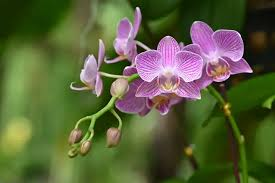

SOCIEDAD · ESPECIAL BOTÁNICO
Un análisis revela las flores que mejor representan su esencia.
Representan singularidad, elegancia natural y amor profundo. No necesitan imponerse para destacar; su presencia es suficiente.
Así es él: único en su clase, sereno, auténtico. No es orgulloso, no busca llamar la atención, pero inevitablemente la tiene.
Su seriedad convive con su lado juguetón, y su mayor alegría es verla sonreír. Como la orquídea, su belleza no es superficial: es intención, es mirada, es constancia.
En sus ojos hay verdad.Y en esa verdad, ella reconoce que su amor es real.
Simbolizan alegría y energía luminosa. Reflejan esa sonrisa que ilumina incluso los días más grises.
No es de enojarse fácilmente. Prefiere la calma, la conversación, el equilibrio.
Pero cuando algo es injusto, sabe defender lo que siente.
Su sonrisa no es solo un gesto: es refugio.

Asociados con nobleza y pureza emocional. Representan la profundidad de una mirada que habla sin palabras
Símbolo de amor firme y constante. No se marchita ante las dificultades.
Pero celebran los años, el crecimiento y la fe que comparten.
Y eso —en un mundo de amores fugaces— es lo que realmente importa.
Conclusión del informe: más allá de cualquier flor, lo que realmente destaca es la esencia. La sonrisa que ilumina, la mirada que calma y la belleza que no depende de pétalos.